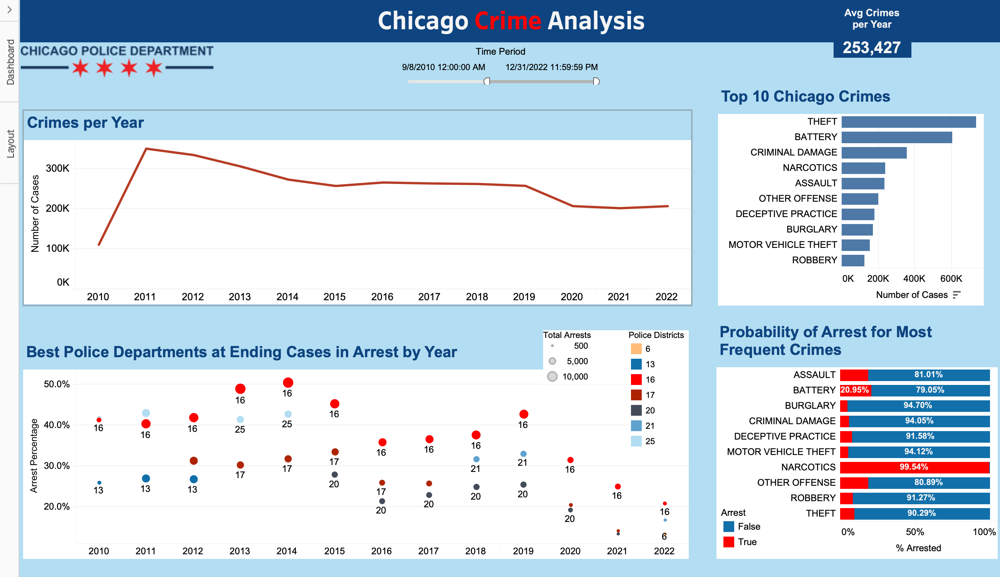

Chicago Crime Dashboard

Created an interactive dashboard using Python and Tableau to visualize and draw insights about historic trends in Chicago crime.
The data revealed some interesting things about the city, some expected some unexpected. Surprisingly, the police departments that most frequently end their cases in arrest were consistently located in the North/Northwest sides of the city (20th, 17th, 16th, 25th). This could potentially be attributed to the difference in demographics, changing the types and volume of crimes compared to the south side, west side, and downtown. More of the low arrest probability crimes, likely occur more in the more densely populated areas, skewing against the departments in those locations.
This dashboard serves as an overview to generate questions and conduct more specific analyses on certain segments. I would like to revisit this dataset to take a closer look at these metrics for each general location. It would also be great to have data added that encapsulates things like citizen income, department budget, 911 call frequency, and online sentiments.
• NOTE: A glitch in Tableau prevented the project from saving, leaving just a screenshot & losing interactivity.